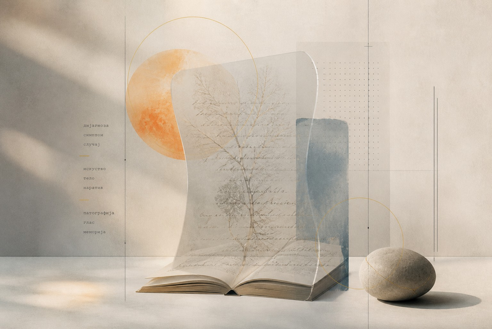
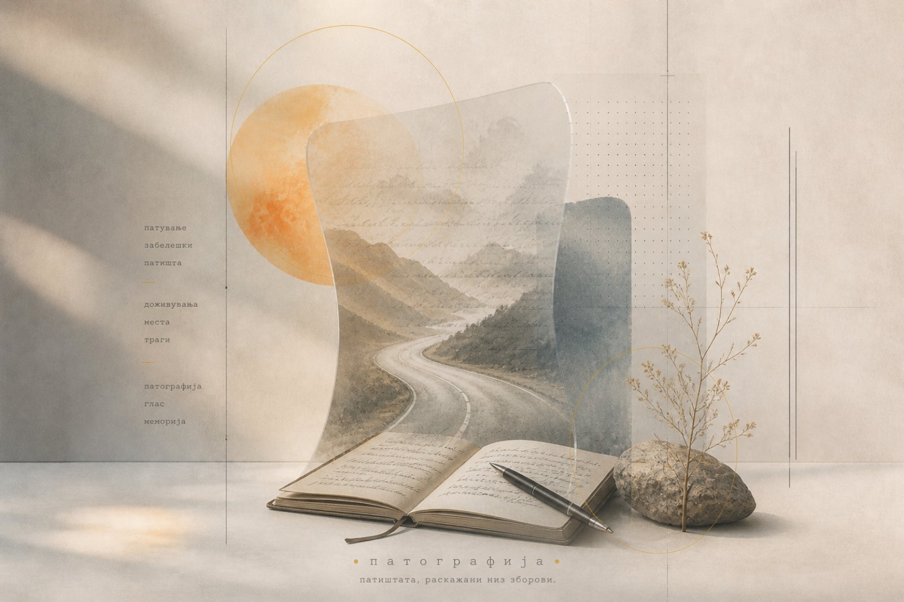
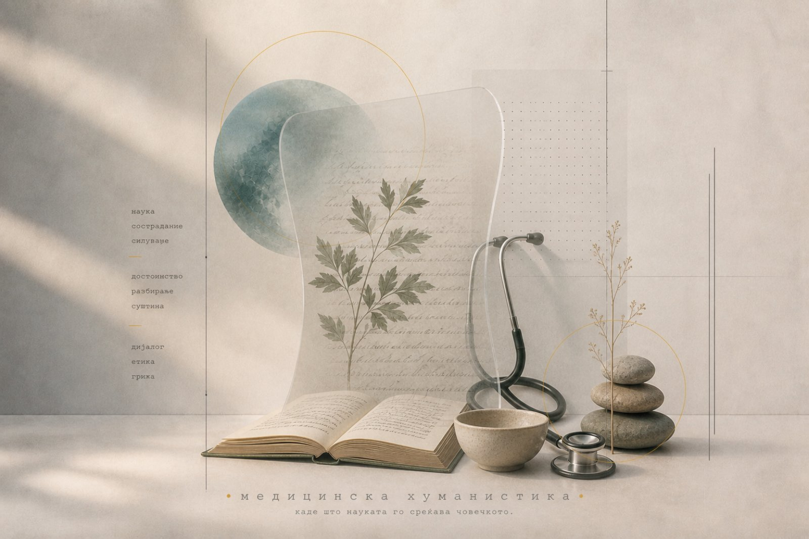
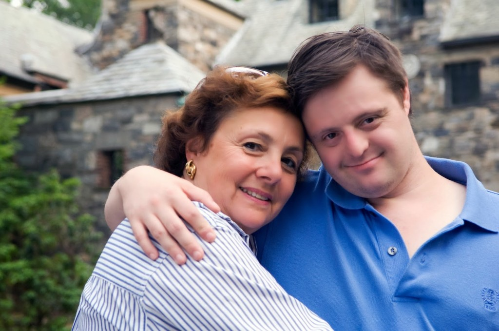

„Тоа лето ја сретнав мојата животна сопатничка. Опасна женска, права рибетина. Целиот јуни флертуваше со мене, а во јули ја запознав и „се фативме“, поточно 12 јули. Многу јака цура, да ти се сврти во главата. И ти се врти во главата, друже мој затоа што мозок „јаде“, поточно еден дел од мозокот, миелинот […]. Ме фати и едно е сигурно, никогаш нема да ми раскине. А верувај ми, многу е верна, секогаш и секаде е со мене. Не ми дава мир ниту дење, ниту ноќе, ми на јаве, ни на сон.“
(Данел Јанев „На почетокот на крајот“)
„Да можам би ти се одмаздила за неа, знаеш? Би измислила лек со кој не ќе можеш да се доближиш до ниту еден човек на овој свет, но за жал...победуваш ти. Слушај да ти кажам, ФАЛА ШТО ДОЈДЕ ВО МОЈОТ ЖИВОТ, ми го направи поубав, побистар. Пораснав.“
(Ивана Милошевска „Убиецот кој не ме уби“)
„Да гледаш личност што е болна е една работа, но да гледаш како од некој што ти е близок останува само лушпа, е сосема друга. Ќе ги препознаеш цртите на лицето, физичките особини, но во очите нема ништо, некој сосема друг свет“
(Драгица Русевска-Христовска „Кога мама заборави да ме сака“)
„Ги затворив очите и во тој момент имав голема потреба од мајка ми. Сакав таа да е покрај мене во тој момент. Почнав да плачам бидејќи секакви мисли ми прелетуваа... тогаш сфатив колку многу сакав да живеам. Ме исплашија силните звуци на таа машина. Почнав да размислувам за крајот. Се прашував дали боли испуштањето на послениот здив [...] јас ја немав завршено мојата приказна. “
(Сања Поповска „Девојката со портокаловата марама“)
„Те болеше белегот, нели?
-Белегот, да не се повторувам, секогаш ќе боли. Тој по секое разголување, во секој мој поглед во него ќе биде тука да ме потсети на страдањата што ги имав [...] во таа 2016 година. Зацелувањето на раната се одвиваше полека, ниедна пора не се бунтуваше против новата состојба, туку баш напротив, по хируршкиот зафат или таканаречената мастектомија на десната града, се случи еден чуден пацифизам, неодредено помирување...“
(Маја Трајковиќ „Пресек“)
„Понекогаш треба да поминете низ најлошото, за да дојдете до најдоброто. Вашето патување не е осмислено да биде лесно, тоа е осмислено да биде вредно. Ако нема борба, нема ни раст.“
(Верица Димитровска „Еден мој ден“)
„Ми се случи она што и се случува на водата, кога каменот ќе удри врз нејзината површина. Таа се бранува, се разобличува, темниот талог од дното се крева нагоре. Кога тој ќе почне да слегнува, полека се враќа бистрината. Така некако беше и со моите чувства ... им требаше време да се сталожат“
(Мимоза Петревска Георгиева „Живот вреден за живеење“)
„За да се склопи целата слика потребна е повеќе светлина врз животот и секојдневијата на овие семејства. Тоа се оние луѓе кои повеќето од вас не би сакале да ги сретнат и со кои понекогаш пелтечите додека разговарате, кои ви се смешкаат обидувајќи се да ви ја омекнат нелагодноста и погледот што упорно се лепи на нивното дете“
(Мимоза Петревска Георгиева „Живот вреден за живеење“)
„Многу ќе сакав јас кога бев млад, да можев да наидам на нешто вакво. Да знаев, тогаш, дека не сум сам. Моите прсти да галеа страници од туѓи болки, кои ќе ми беа приспивна утеха во секој буден момент, а преку ноќ прекривка. Дека некој како мене постои. Дека некој друг ги брише истите солзи“
(Кирил Ангелов „Безсловен“)
„Причините кои ми беа инспирација од самиот почеток, моите мисли, нашите сеќавања, спомените за еден период од нашите животи, сето тоа ставено на парче хартија, овековечено и заштитено од заборав“
(Тони Пејчиновски „Во чекор со судбината“)
„...секој од спектарот има единствена приказна што чека да биде раскажана, патување на откривање, прифаќање, поврзување во свет кој ја цени различноста.“
(Амела Мемиш Апостоловска „Светот на аутизмот. Патувањето на Леон“)
„Мојата мисија и јас сме одбрани. Можеби звучи чудно, не знам ни сама од каде тоа чувство, некоја визија за нешто што треба да се посведочи, а ни самата не знам како, што и кога …“
(Андријана Мациев и Јулија Мациевска „Јас сум жива“)
„... во еден момент ќе ви светне сè што е вистински важно и ќе знаете точно каде сте и што треба да направите за понатаму. Ќе ја откриете својата мисија, вистинска цел и задача. Причината поради која чекорите по земјава...“
(Мартин Јовановски „Зошто јас“)
Reading Room
ЧИТАЛНА
Медицинска хуманистика

Поле на читање Медицинска хуманистика Интердисциплинарен пристап што ја чита болеста преку книжевност, историја, филозофија и искуството на пациентот.Медицинската хуманистика ги поврзува медицината и хуманистичките дисциплини (медицината, книжевноста, филозофијата, историјата и уметноста), во истражувања што овозможуваат подлабоко разбирање на медицински состојби, телесноста и искуството на пациентот. За разлика од клиничката медицина, која го дефинира телото преку дијагнози и медицински протоколи, медицинската хуманистика го поставува прашањето: Како е да се биде болен? Што се случува со „внатрешноста“ на болеста? Како се трансформираат идентитетите на болниот, на неговите најблиски? Кои се елементите на таа трансформација?
Еден од најпознатите теоретичари на медицинската хуманистика е американскиот теоретичар Г. Томас Кузер (G. Thomas Couser). Неговата студија Recovering Bodies: Illness, Disability, and Life Writing (1997) претставува пресвртница во академското читање на наративите на болеста. Според Кузер, пишувањето за искуствата од болест е истовремено и поетички и политички чин, затоа што низ овој процес се открива другата страна на искуството.

Жанр Патографија Книжевен жанр за искуството на поединецот со различни медицински состојби, третман или психолошко страдање — од автопатографија до хетеропатографија.Патографијата е книжевен жанр кој опфаќа биографии, автобиографии и мемоари, фокусирани на искуството на поединецот со медицинска состојба, медицински третман или психолошко страдање. Овој вид текстови истражуваат како различни медицински состојби го обликуваат животот, идентитетот, социјалниот и емоционалниот свет на една личност. Во медицинските хуманистички науки и во образованието, патографиите често се користат за развивање емпатија, преку приказни од перспектива на пациентот.
Патографиите можат да имаат различни форми, вклучувајќи наративи за болест и други состојби, напишани од пациенти и нивни блиски, ретроспективни анализи на историски личности и графички патографии во форма на стрип или визуелно раскажување. Клучна одлика на овој жанр е фокус на телесните, често маргинализирани аспекти на искуството.
Во медицински контекст, патографијата првпат е дефинирана во 1853 година, во медицинскиот речник (Medical Lexicon: A Dictionary of Medical Science) на Робли Данглисон (Robley Dunglison), како опис на болест. Подоцна, таа еволуира во биографска, психолошка или историска студија на здравјето на поединецот. Овој тип текстови истражуваат како болеста влијае врз животот или творештвото на личноста и обратно, како запишаното искуство влијае на надминување на предизвиците со болеста (како терапевтски чин).
Автопатографијата (приказна на пациентот) е „медицинска исповед“ или приказна во прво лице. Овие текстови, слични на мемоари или дневници, ја откриваат перспективата на пациентот и ја дополнуваат клиничката анализа на случаи. Хетеропатографија (приказната на другиот) често е напишана од член на семејство , негов пријател или биограф.
Патографиите се важни затоа што го кажуваат она што медицината не може да го каже, затоа што лекарскиот извештај ја именува, ја класифицира и ја лекува состојбата со медицинска терапија. Но, патографијата чувствува, толкува и раскажува.

Клинички пристап Наративна медицина Практика што бара лекарот да ја слушне, разбере и почитува приказната на пациентот, а не само симптомот.Наративната медицина е дисциплина која се развива на границата меѓу клиничката практика и хуманистиката и се фокусира на развој на способноста да се препознае, да се протолкува и да се одговори на нечија приказна за болест, попреченост, невродивергентност и сл. Пристапувањето кон ова искуство, на ваков начин е книжевна, но и медицинска компетенција, затоа што се однесува на лекарите и здравствените работници кои треба да го слушаат „наративот“ на пациентот и неговото внатрешно доживување на болеста.
Идеен творец на наративната медицина е американската лекарка и книжевна теоретичарка Рита Чарон (Rita Charon). Нејзината книга Narrative Medicine: Honoring the Stories of Illness (2006) е програмски текст на оваа дисциплина и концепт на кој се развиваат програми за професионални студии од областа на медицината. Чарон ја дефинира наративната медицина како медицина практикувана со наративна компетентност, односно, со способност на лекарот да ги разбере телесните симптоми — во контекст на животната приказна на пациентот. Оваа перспектива дава поширок увид на видливите реакции на болеста, низ призмата на внатрешните процеси на личноста и интимните искуства.
Наративната медицина е академска програма која се изучува на неколку светски универзитети и опфаќа теми поврзани со книжевна анализа на текстови кои го истражуваат човечкото искуство поврзано со здравјето и болеста.

Текст ДОБРЕ ДОЈДОВТЕ ВО ХОЛАНДИЈА Личен и книжевен простор за разбирање на животните приказни зад архивата.Емили Перл Кингсли
Често ме прашуваат да го опишам искуството од одгледувањето дете со попреченост – да се обидам да им помогнам на оние кои не го споделиле тоа единствено искуство, да го разберат, да замислат како би се чувствувале. Тоа е вака…
Кога очекувате бебе, тоа е како да планирате прекрасно патување – во Италија. Купувате книги — водичи, правите прекрасни планови. Колосеумот. Давид на Микеланџело. Гондолите во Венеција. Можеби учите и неколку корисни фрази на италијански. Сè е толку возбудливо.
По месеци нетрпеливо исчекување, конечно доаѓа денот. Ги пакувате куферите и тргнувате. Неколку часови подоцна, авионот слетува. Стјуардесата влегува и ви вели: „Добре дојдовте во Холандија.“
„Холандија?!?“ велите. „Како мислите Холандија?? Јас имам билет за лет во Италија! Требаше да бидам во Италија. Целиот мој живот сонував да одам во Италија.“
Но, планот на летот е променет. Слетавте во Холандија – и таму мора да останете.
Важно е дека не ве однеле во некое страшно, одбивно, нечисто место, зафатено со зараза, глад и болест. Тоа е само поинакво место.
Затоа треба да излезете и да купите нови книги-водичи. И треба да научите сосема нов јазик. И ќе се сретнете со сосема нови луѓе, со кои инаку никогаш не би се сретнале.
Тоа е едноставно поинакво место. Побавно е од Италија и помалку блескаво. Но, по некое време, кога ќе земете здив, ќе погледнете наоколу… и ќе почнете да забележувате дека Холандија има ветерници… дека Холандија има лалиња. Холандија дури има и Рембранти.
А сите што ги познавате постојано одат и се враќаат од Италија… и сите зборуваат колку убаво си поминале таму. И до крајот на животот ќе си велите: „Да, таму требаше да одам. Така имав планирано.“
И болката од тоа никогаш, никогаш, никогаш нема целосно да исчезне… затоа што загубата на тој сон е многу, многу голема загуба.
Но… ако го поминете целиот живот тагувајќи што не сте стигнале во Италија, никогаш нема да бидете слободни да уживате во оние посебни, прекрасни нешта што ги има Холандија.
Welcome To Holland
Emily Perl Kingsley
I am often asked to describe the experience of raising a child with a disability — to try to help people who have not shared that unique experience to understand it, to imagine how it would feel. It's like this…
When you're going to have a baby, it's like planning a fabulous vacation trip — to Italy. You buy a bunch of guide books and make your wonderful plans. The Coliseum. The Michelangelo David. The gondolas in Venice. You may learn some handy phrases in Italian. It's all very exciting.
After months of eager anticipation, the day finally arrives. You pack your bags and off you go. Several hours later, the plane lands. The flight attendant comes in and says, “Welcome to Holland.”
“Holland?!?” you say. “What do you mean Holland?? I signed up for Italy! I'm supposed to be in Italy. All my life I've dreamed of going to Italy.”
But there's been a change in the flight plan. They've landed in Holland and there you must stay.
The important thing is that they haven't taken you to a horrible, disgusting, filthy place, full of pestilence, famine and disease. It's just a different place.
So you must go out and buy new guide books. And you must learn a whole new language. And you will meet a whole new group of people you would never have met.
It's just a different place. It's slower-paced than Italy, less flashy than Italy. But after you've been there for a while and you catch your breath, you look around… and you begin to notice that Holland has windmills… and Holland has tulips. Holland even has Rembrandts.
But everyone you know is busy coming and going from Italy… and they're all bragging about what a wonderful time they had there. And for the rest of your life, you will say “Yes, that's where I was supposed to go. That's what I had planned.”
And the pain of that will never, ever, ever, ever go away… because the loss of that dream is a very very significant loss.
But… if you spend your life mourning the fact that you didn't get to Italy, you may never be free to enjoy the very special, the very lovely things… about Holland.